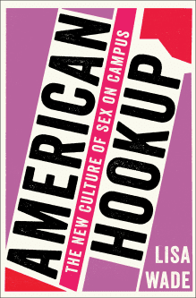
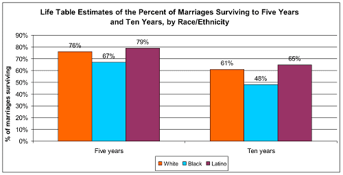

is an aspiring philosopher king, living the dream, travelling the world, hoarding FRNs and ignoring Americunts. He is a European at heart, lover of Latinas, and currently residing in the USA.


Lisa Wade, a sociology professor at Occidental College of California, who earned her Ph.D. at U Wisconsin, Madison, recently published an article attacking marriage because women aren’t happy and satisfied with it. While she comes to some horribly backwards conclusions, she does raise an interesting point about the paradox of declining female happiness. Why are women unhappier now than at any point in modern history, despite being given more and more?
While this topic has been addressed before, in studies done by University of Pennsylvania researchers Betsey Stevenson and Justin Wolfers, feminists like Wade continue to come to all the wrong conclusions. Wade’s recent article “Women are less happy than men in marriage, but society pretends it isn’t true” is laden with logical errors and faulty conclusions.
Wade is an associate professor of sociology, focusing on gender studies. She has appeared in Ms Magazine, Jezebel, and MTV, has published articles about American female genital cutting (I have never met an American who had their genitals cut who was not a man), and recently released a book titled American Hookup: The New Culture of Sex on Campus. She earned her Ph.D. at a college with a long history of feminism.

Her book has been described incorrectly as the “best book about sex on campus, bar none” (that would be Bang), and reviews label it as “shin[ing] the bright light of sociology and feminism onto American college sexual culture…reveal[ing] the tableau of racial, class, and gender inequality on which the not-really-so pervasive phenomenon of student hookups is playing out.”
Note: If you are interested in this topic: Unhooked: How Young Women Pursue Sex, Delay Love, and Lose at Both by Laura Sessions Stepp is an interesting look into college sex culture from a female perspective. Stepp is a Pulitzer winning author whose 2008 book reveals the eventual heartache, disappointment, and pain hookup culture causes these women.
Thrilling to be on the same page as some of my sheroes: Arlie Hochschild, @JessicaValenti @peggyorenstein @aelizabethclark @endrapeoncampus, pic.twitter.com/EfQ5iwOiPK
— Lisa Wade (@lisawade) January 11, 2017
Wade’s marriage article attempts to answer the question: Why do women have more rights, opportunities, status, power, and privilege than at any time in modern history, but are less happy than ever in both absolute terms and in comparison to men?
Wade’s first answer is that marriage is an unequal institution, that women are carrying a heavier weight of the household chores than men, and are more likely to sacrifice their free time and career goals for the marriage. Despite anecdotal evidence from every married man I know that paints the exact opposite picture, we shall analyze this objectively.
I know no man who comes home to a nice, warm dinner made by his wife, or a house that she cleaned herself, or any relationship-building efforts the woman takes the initiative in making for the happiness of her husband or strengthening of the marriage.
Wade, a PhD professor holding unequal power over her students
Of course, there are many unequal institutions. Indeed, equality is rarely if ever encountered, and it’s an absurd demand. The arrangement between employee and employer is practically never between equals–a large, wealthy, powerful employer offers a wage to a worker, who is of comparatively minute power and importance to the operation of the firm. And yet this arrangement produces a productive and profitable arrangement for both parties.
An education is not obtained between equal parties. A trained, knowledgeable superior imparts knowledge and experience to a novice learner.
Unequal shitlord assuming his knowledge is more than his students
A religious consultation is between a trained, knowledgeable theologian experienced in helping others through moments of weakness or pain and someone full of doubt or pain or questions. There is typically one religious leader responsible for dozens or hundreds of individuals in a very unequal relationship, yet both parties happily coexist in this arrangement.
Even friendships are rarely “equal.” Some friends offer me greater social access, a nicer home, or are wealthy enough to pick up the tab for nights out, or are simply more dependable and reliable, while others may not have as much to offer, but I still value their loyalty, sense of humor, or other facet which brings value.
Steve Jobs had a massive ego and thought no one was his equal: Result: #1 tech firm
The political philosophy of Western democracy relies on the social contract, where the individual agrees to abide by the laws and rules of a government in return for legal protection. Who do you think holds more power, you or the federal government? It’s an incredibly unequal arrangement.
The bottom line is that equality is a rare occurrence, and the mere fact that two people enter into an agreement unequally is not only irrelevant, but largely expected.
Wade’s second point is that marriage is a compromise, and that women, moreso than men, make sacrifices of their time and career goals.
Marriage is indeed a compromise, and marriage, while it may be an institution worthy of support, is not for everyone and should be entered into only after strong consideration. However, it has been the bedrock of social interaction, and indeed, of western society itself, if not most cultures throughout the world, for centuries. Throwing marriage out the window because it means the woman may not go to as many girls nights out, or her lifetime output of TPS reports may be slightly lowered, is absurd.

The truth is men and women are opposite, and intrinsically related, as yin and yang, day and night, black and white. Historically, cultures placed the man as the head of the household because men are physically stronger, mentally wiser, more reasoned, logical, and less emotional or irrational. Changing these roles is like a gazelle telling himself he will now become a carnivore, because it’s more aggressive. These roles are based in biology, and reinforced through various cultural norms and religions.
Early Judaism and Christianity proscribed these roles thousands of years ago, as a pattern for social behavior. The Bible teaches that woman was created for man “for indeed man was not created for the woman’s sake, but woman for the man’s sake” and that Adam alone was commanded by God, and punished for Eve’s actions. God issued the prohibition to eat from the forbidden fruit only to Adam; it was implied that Adam was to relay this to Eve, who had not yet been created. Although Eve was the sinner who ate from the tree, God rebuked Adam as head of the family for Eve’s transgressions.

El Greco’s Marriage Of The Virgin
Submission is not always a negative thing. I submit to the moral rules of society and my religion, even when they are against my self interest. I also submit my personal desires and aspirations due to workplace demands. Despite having a flexible, independent job, I am still responsible to others and must generally place my own interests secondary to others during at least part of the work week. And we all subordinate ourselves before the forces of government, whether we believe in what it is doing or not.
That said, submission is a feminine quality; generally men would do well to become more independent and less submissive, while women as a whole benefit from the opposite. The notion of women submitting to their husbands means that their personal wishes or desires should not come before the family. Every group needs a leader, and men have been entrusted with this role.
This is a matter of biology, and outside the scope of this article, but men have throughout history and throughout cultures, been the head of the household. Just as women have been the primary party to rear children. Biologically, women are granted breasts to feed newborn children, and this is why men have an instinctual attraction to breasts. While men have small breasts of their own, women do not have the same attraction to male breasts, because there is no biological reason to.
So women are subordinate in marriage. Is this bad or wrong? Religion, social custom, history says no. And science tells us that altering the natural order of things by making men more feminine and women more masculine ends up making both parties less happy. So subordination is neither shameful, nor bad, nor wrong.
Wade’s next claim is that women sacrifice more of their free time and career goals to the family than men. This is mostly a repeat of the first argument: equality. It should matter not so much which party is giving more in creating a family, because that sacrifice is required in order for the family unit to exist, and most arrangements in life are not equal.

Symbiosis: Nature doesn’t care which party is giving “more”
Men typically carry the burden of earning the income required to support the wife and children, providing the resources for housing, comfort, clothing, utilities, education, transportation, and entertainment. Where women also contribute to this through working, it is due in large part to overconsumption or the absurdly high cost of living that modern city life entails.
What Feminists Think Women Are Happiest Doing
There are women who have accomplished great things outside the family, and women who are more motivated by art, science, or career than by building a family, but they are the exception to the rule. And since no one is forced to marry in the west, these women are free to abstain from marriage. But as a group, women are much more satisfied when they focus on their family, instead of working in a stressful office. I can think of no career that is more important than the education, upbringing, and instilling of values in my future children, and by that respect, the woman raising them has a far more important job than whatever career I am undertaking to take care of material needs.

What Woman Are Happiest Doing
Pre-modern “feminism” was always about this: uplifting the feminine spirit, celebrating motherhood, and virtue, and beauty. Modern feminism is about rejecting it.
Wade’s final argument is that, adding insult to injury, women are fed falsehoods about marriage, which trick them into this institution that then makes them unhappy and destroys their plans at becoming hilarious comedians or CEOs or astronauts.

She claims that “compared to being single, marriage is a bum deal for many women,” and that married women are more unhappy than both single women and married men, and are more likely to file for divorce. Some of this may be true, and indeed in today’s crazy society where women can have their cake and eat it to, marriage does seem to cut in a bit on their dreams of riding the cock carousel endlessly, partying it up at the club and then stumbling in to the HR job hung over, and living without any sort of responsibility.

Of course, if we are talking about the eternal children that many Western women are, marriage is indeed a rather harsh set of restrictions on their unbridled behavior. But if we are talking about a grown woman raising a family, numerous studies have shown that it is universally better to raise children in a marriage rather than outside one.
However, Wade does have a point: there are lies being told to women about marriage, namely:
Wade’s twisted explanations for why women are unhappy oversimplify and misunderstand the fundamental problem: that women are losing their femininity and virtue–the very ideal that makes them women, and this is causing them fundamental unhappiness. Measuring a woman’s happiness by her career performance, salary, number of cats owned, or number of cocktails consumed is a bad metric.
While modern marriage may have serious faults, and indeed I’m hesitant to recommend it, it remains the best option for raising a family, and if women were historically happier under a patriarchy insisting on virgin brides and offering women a stable, safe home in return for her household and childrearing contributions, perhaps they should consider the obvious—returning to that happy system.
Read More: 9 Types Of Feminists And How To Counter Them